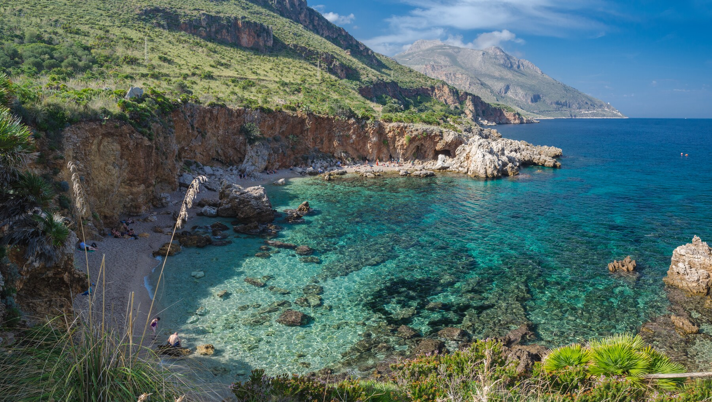
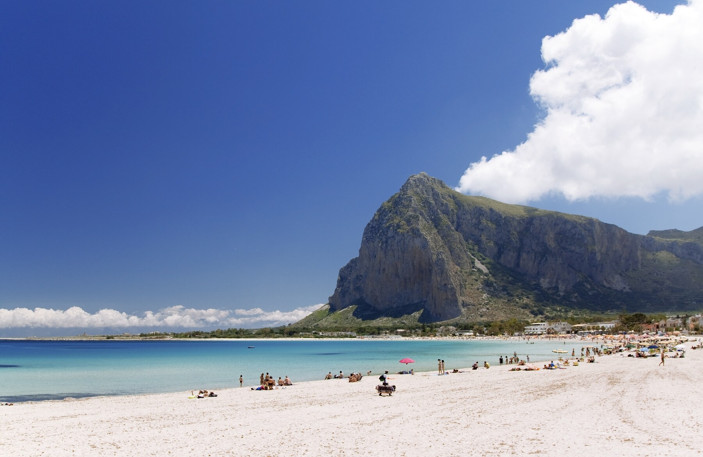
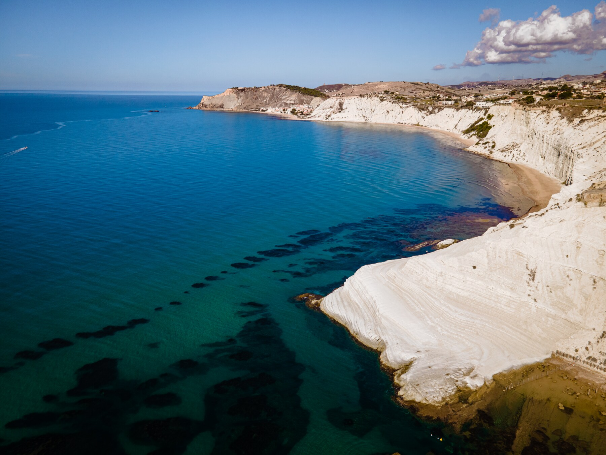
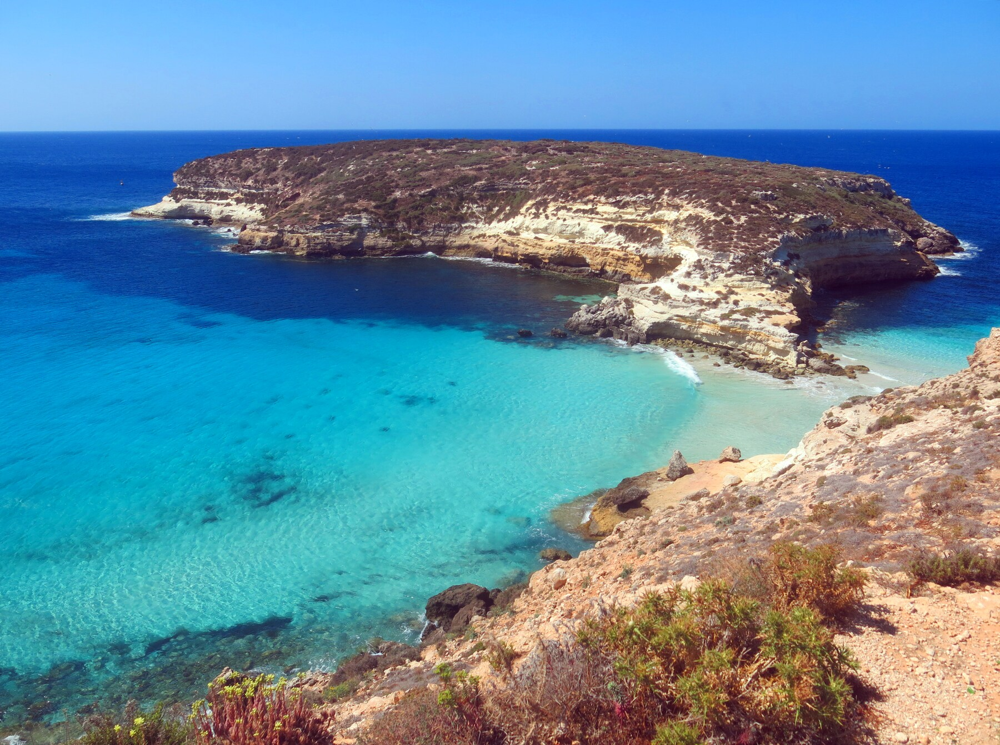

Vittorio Giaconia
Mondello (PA)
Il nostro viaggio alla scoperta delle spiagge più belle della Sicilia inizia dalla zona di Palermo, capoluogo regionale e simbolo di quel crocevia di civiltà che è tratto distintivo dell’isola. A soli 11 chilometri a nord del centro si trova la frequentata spiaggia di Mondello, ampia baia racchiusa tra il Monte Gallo e il Monte Pellegrino. Distendetevi al sole sulla calda sabbia chiara e regalatevi bagni rigeneranti in acque cristalline, ma non tornate a casa senza aver ammirato le numerose ville in stile Liberty costruite nel corso del Novecento, bellissima espressione dell’Art Nouveau in Italia.
Riserva dello Zingaro (TP)
Proseguendo ancora verso ovest da Palermo, si raggiunge la prima riserva naturale di Sicilia, 7 chilometri di natura incontaminata tra San Vito Lo Capo e Castellammare del Golfo. Area naturale protetta in provincia di Trapani, la Riserva dello Zingaro è una destinazione da sogno per chi al mare vuole abbinare un po’ di trekking. Infatti le sue sette spiagge e calette sono raggiungibili attraverso percorsi a piedi con viste mozzafiato sulla costa. Tra le più facili da raggiungere (e quindi anche più affollate) vi segnaliamo Cala Tonnarella dell’Uzzo, la più grande e frequentata e la più vicina all’ingresso Nord, e la piccola Cala Capreria, la più vicina all’ingresso Sud.
 3.San Vito lo Capo (TP)
Il nostro itinerario alla scoperta delle spiagge più belle della Sicilia continua verso la mitica San Vito Lo Capo, conosciuta localmente come “Santu Vitu”. In provincia di Trapani, nella punta nord occidentale della Sicilia, è un incanto della natura: su una baia a ridosso della montagna, troverete un mare di un azzurro pieno e intenso che contrasta con la finissima sabbia bianca e col bianco delle casette del paese, bello e ricco di antichissime tradizioni marinare. Fate un salto al Museo del Mare, se avete in programma più di un giorno sanvitese. Spiaggia ideale anche per i più piccoli, che qui si divertiranno tra castelli di sabbia e tanti bagni.
 4.Scala dei Turchi (AG)
Quando a scolpire un paesaggio è la natura c’è poco da dire, ci si può solo innamorare: la Scala dei Turchi, a ridosso di una bianchissima falesia di marna che digrada a picco nel mare smeraldino, creando un bellissimo contrasto, è uno di quei posti che vi toglie il fiato, per quant’è bello! Siamo lungo la costa agrigentina, nei pressi di Realmonte, e si racconta che qui trovassero rifugio le imbarcazioni dei pirati turchi, di cui resta traccia nel nome della località. La falesia, a cui si accede dopo una breve passeggiata lungo il litorale sabbioso, presenta delle cavità che formano delle poltroncine naturali, comodissime per prendere il sole; e il tipo di roccia, fredda, vi darà un piacevole refrigerio nelle caldi giornate siciliane.
 5.Isola dei Conigli (AG)
Decretata la spiaggia più bella del mondo, l’Isola dei Conigli dista pochi metri dall’omonima spiaggia che si trova su Lampedusa, nell’arcipelago delle Isole Pelagie al largo della costa meridionale della Sicilia. Completamente rocciosa, circondata da magnifiche acque che virano dal verde smeraldo al blu cobalto, l’Isola dei Conigli è una riserva naturale protetta dove le tartarughe marine Caretta Caretta vengono ogni anno a deporre le loro uova. Sull’isolotto vivono anche un centinaio di coppie di gabbiano reale, che qui nidifica. Tutta l’isola di Lampedusa vanta spiagge e cale tra le più belle della Sicilia che vi consigliamo caldamente di visitare.
